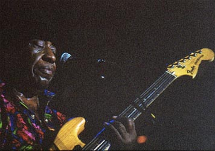
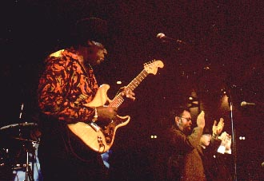

|
 Если ветераны "Братья Холмс" известны в Москве лишь продвинутым почитателям блюза, а Лил Брайан, по молодости лет и вовсе почти никому, то "звезда" вечера Лонг Джон Хантер в особых представлениях не нуждался. Проведший большую часть "карьеры" в кабаках и тавернах на мексиканской границе, он стал всеамериканской блюзовой сенсаций, когда к его 65-летию "Alligator" переиздал его альбом, записанный в 1992г. Хантер играет уверенным звуком Алберта Кинга с техасской энергичностью Алберта Коллинза в сопровождении по-блюзовому свингующей медной группы. При этом он обладает самобытным гитарным звучанием и собственным неповторимым почерком (что в блюзе важнее всего). В интервью Хантер определил цель своей музыки Хантер - "It's for fun" - для веселия. После десятилетий закалки в бедламе текс-мекс-клубов, атмосфера европейских концертов, вероятно, кажется ему пресноватой. На концерте он держался несколько холодновато и отстранено, словно выдерживая дистанцию, и в джеме участия не принял. Хотя ежевечерне выходил в публику в сопровождении второго гитариста, саксофониста и трубача, оставив на сцене только басиста и барабанщика.Выступал он в сопровождении группы из молодых белых профессионалов, которые не только знают свое музыкальное дело, но и устраивают шоу в стиле "Братьев Блюз" (хотя времена меняются, и в их спектакле есть что-то от "Людей в черном"). Их часть концерта феноменально весела, и, что особенно приятно, шутки у них незаученные, а сымпровизированные, каждый вечер - новые. Вот только… Ну да ладно - было весело, и нечего придираться. ВЭБ™'00 Интервью с Лонг-Джоном ХАНТЕРОМ. Интервью с "Братьями ХОЛМС". Интервью с Лил'Брайаном. Фоторепортаж о послефестивальном джеме. Официальные пресс-релизы Эфес-фестиваля. Конкурс-лотерея Блюз-Ру к фестивалю. |